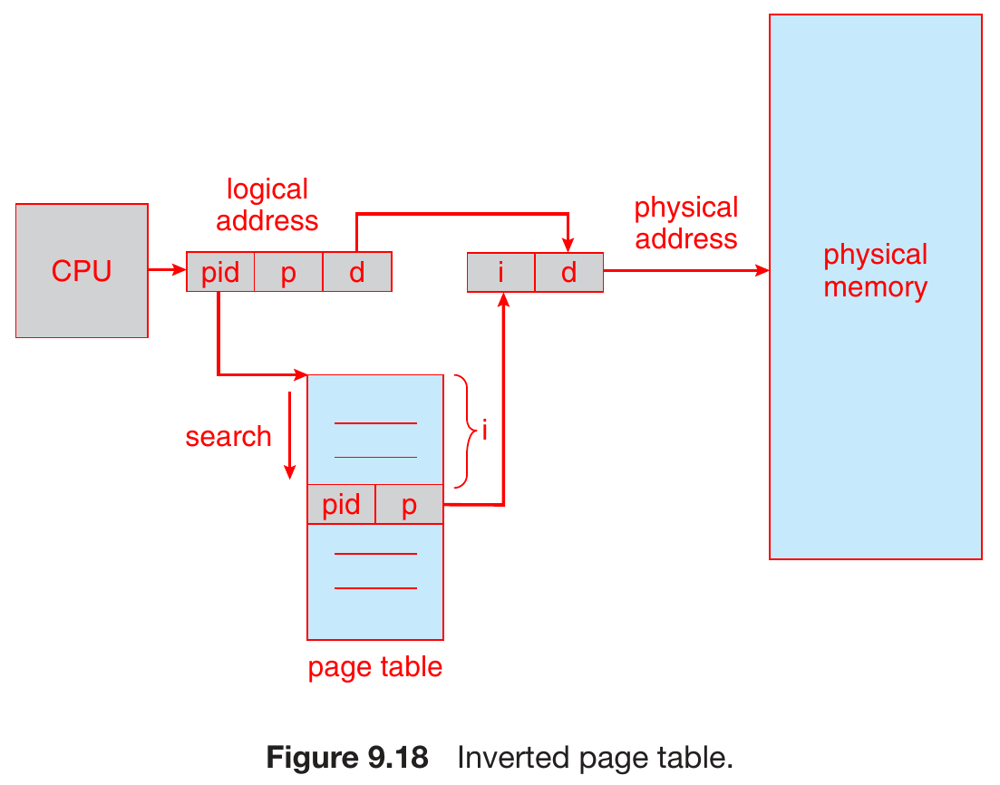
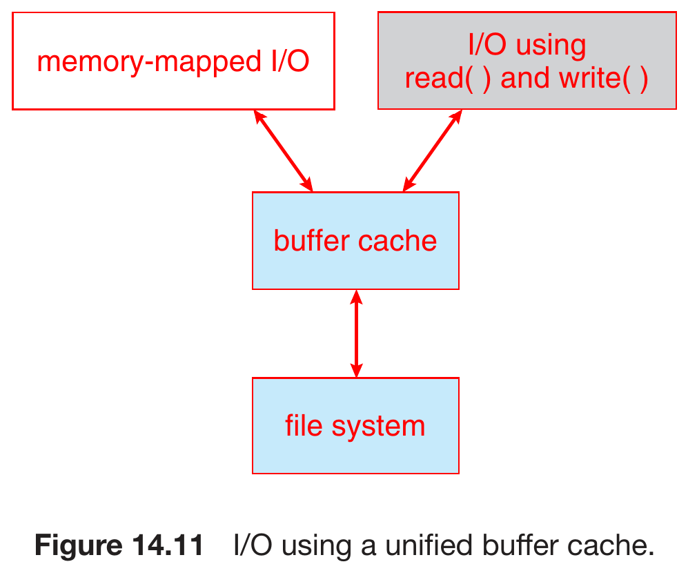
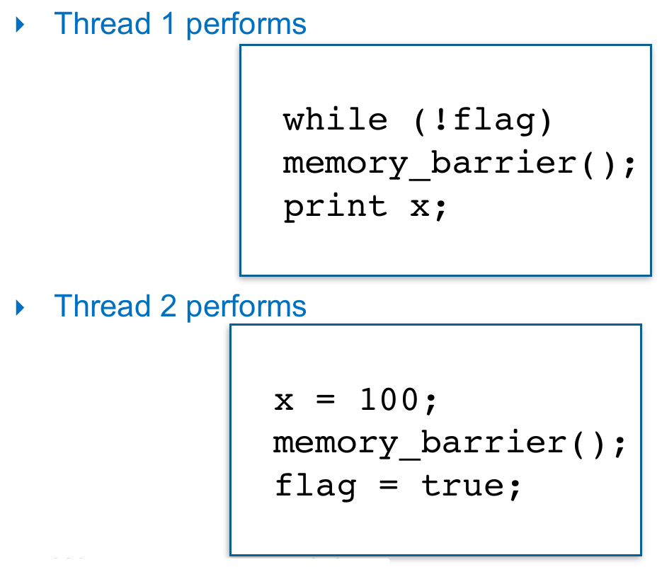
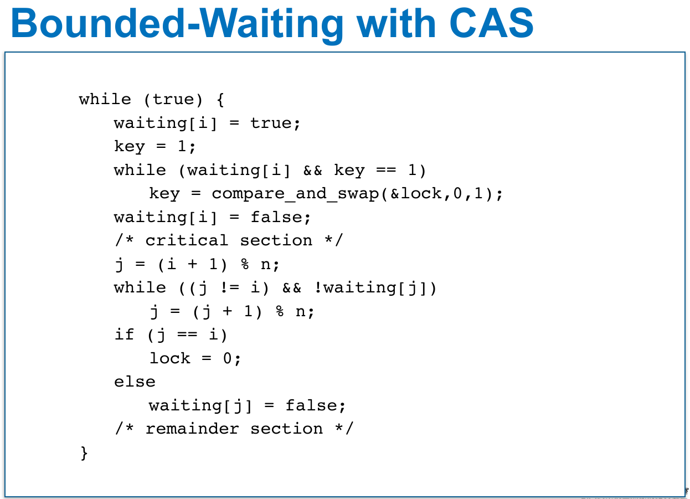

Operating Systems¶
materials¶
videos¶
¶
- Course Intro
- Intro
- Structures
- Process
- Threads & Concurrency
- Main Memory 1
- Main Memory 2
- Virtual Memory 1
- Virtual Memory 2
- CPU Scheduling 1
- CPU Scheduling 2
- Mass-Storage Systems
- File System Interface
- File System Implementation 1
- File System Implementation 2
- File System Internals
- Synchronization Tools
- Synchronization Examples
- Course Summary
¶
- Course Info
- Intro
- Overview 1
- Overview 2
- Process 1
- Process 2
- Process 3
- Threads & Concurrency 1
- Threads & Concurrency 2
- Threads & Concurrency 3
- Threads & Concurrency 4
- Threads & Concurrency 5 - Threading Issues
- Main Memory 1
- Main Mamory 2
- Main Memory 3
- Virtual Memory 1
- Virtual Memory 2
- Virtual Memory 3 - Page Replacement
- Virtual Memory 4
- Virtual Memory 5 - Thrashing
- CPU Scheduling 1
- CPU Scheduling 2
- CPU Scheduling 3
- CPU Scheduling 4 - Multi-Processor & Real-Time
- CPU Scheduling 5 - Real-Time
- CPU Scheduling 6 - OS Examples & Algo Evaluation
- Mass-Storage Systems 1
- Mass-Storage Systems 2
- File System Interface
- File System Implementation 1
- File System Implementation 2
- File System Implementation 3
- File System Internal 1
- File System Internal 2
- Synchronization Tools 1
- Synchronization Tools 2
intro¶
- GPU
- many processing unit, executing in parallel
- each unit performs simple task
- bootstrap
- load OS into memory at startup
- storage-device heirarchy
- interrupt
- hardware interrupt
- I/O
- software interrupt
- exception
- hardware interrupt
- system call
- interface to OS services
- system call -> generic parameters -> API
- system boot
- bootstrap (in nonvolatile storage) find kernel
- load kernel into memory
- kernel initializes hardware
- mount root file system
- debug
- failure -> save memory state as file for analysis
- core dump
- process fails -> save memory state to core dump
- crash dump
- kernel fails -> save memory state to crash dump
- core dump
- failure -> save memory state as file for analysis
- distributed operating systems
- DOS, distributed operating systems
- tightly-coupled
- for homogeneous multicomputers
- NOS, network operating systems
- loosely-coupled
- for heterogeneous multicomputers
- middleware
- layer on top of NOS
- DOS, distributed operating systems
structure¶
monolithic¶
- no structure
- one large kernel
- everything in the same place
- e.g. original UNIX
- pros
- fast
- little latency
- efficient
- simple
- fast
- cons
- difficult to implement & extend
layered¶
- ring-based
- Intel & AMD now have hypervisor as Ring -1
- computer networks
- cons
- poor performance
- go through many layers to communicate -> big overhead
- defining each layer
- poor performance
microkernels¶
- remove nonessential components
- pros
- extensibility
- portability
- security
- reliability
- cons
- poor performance
- non-core things not in kernel -> overhead when communicating with them
- poor performance
modules¶
- a set of core components
- additional services modularized, linked in at boot time or run time
hybrid systems¶
- linux
- monolithtic
- for good perfornamce
- modular
- dynamically linked in new functions
- monolithtic
- Windows
- monolithtic
- microkernels
- subsystems
- modular
process¶
- program est en file system
- a static entity stored on disk
- process est en CPU & Memory
- a progam in execution
- executable file of program loaded into memory -> process
- a program can have many processes
- process is sequential
- parallel only in an operation, each operation executed sequentially
parts of a process¶
- program code i.e. text section
- read only
- program counter, registers, etc.
- data section
- global variable
- inialized data
- have initial value
- uninitialized data
- no initial value
- heap
- dynamically allocated variable
- stack
- temporary data
- function parameters, return addresses, local variables
- recursively call function -> stack grows until reaching heap -> stack overflow
- stack & heap share a space
- each process has a virtual memory
- won't be accessed by another process
- OS converts virtual memory address to physical memory address
- execution of a program: shell -> runtime environment -> load program -> process
- use
sizeto get the size of each part (and the total size) - Mac OS reserves 4GB of lower memory on 64-bit processor for 32-bit codes
requirements of running processes¶
- multiplexing/time-sharing
- scheduling
- distribute resources to processes
- isolation
- interaction
- share data & code between processes
FSM of process¶
- resource not enough -> don't admit
- running
- only this state uses CPU
- interrupt
- by scheduler
- system interrupt
Process Control Block (PCB)¶
- record the info & status of process
- infos
- process state
- program counter
- CPU registers
- CPU scheduling info
- Memory-management info
- Accounting info
- I/O status info
- open file table
task_structin linux
multi-processor & multi-core¶
- multi-processor
- each processor has its own cache
- main memory & I/O shared with other processors via bus
- multi-core
- many cores in a processor
- each core has its own L1 cache
- other caches shared between cores
- pros
- cache is faster
multiple processor OS¶
- one process for a processor at a time
- schedule multiple processes to run on multiple processors simulteneously
Multiple OS Multiprocessor¶
- each processor has its own OS
- memory & I/O shared among processors via bus
- memory separated into blocks for each processor
Master-Slave Multiprocessor¶
- assymetric multiprocessing
- run OS on master processor
- run processes on slave processors
- memory & I/O shared among processors via bus
Symmetric Multiprocessor (SMP)¶
- each processor has OS kernel
- a global OS exists
- global OS runs global queue, CPU then gets process from global queue and do self-scheduling with its own OS
Heterogeneous Multiprocessor¶
- big little architecture
- big processors
- CPU intensive
- foreground
- little processors
- I/O intensive
- background
- used in Samsung, Apple chips
process scheduling¶
- goal: maximize CPU use
- degree of multiprogramming = num of processes in memory at the same time
- ready queue
- multiple queue, priority queue
- single queue
- wait queue
- I/O-bound process
- more I/O, less computation (time)
- CPU-bound process
- more computation, less I/O
- lock
- spin lock
- try locking the resource endlessly -> CPU 100% -> be treated as CPU-bound process
- mutex lock
- run only when resource is avaiable
- spin lock
- queueing diagram
- context switch
- context stored in PCB
- load the context (state, memory, code, etc.) of the new process when switching process
- pure overhead
- CPU runs no process when doing context switch
- direct cost
- load & store instruction
- indirect cost
- cache miss
- can happen even if some codes are prefetched, e.g. wrong branch prediction
- COLD cache
- cache blank
- cache miss
- voluntarily & involuntarily context switch
- voluntarily context switch
- explicit request
- yield, sleep, request I/O, request to lock, make system call, etc.
- involuntarily context switch
- scheduling
- periodically resume/suspend
- I/O bound -> many voluntarily & involuntarily context switch
- CPU bound -> no voluntarily & little to no involuntarily context switch
- nanosleep()
- suspend process for a very short amount of time
- Mac OS implements it with spinlock -> involuntarily context switch
- Linux implements it the same as sleep() -> voluntarily context switch
- voluntarily context switch
communications¶
- socket
- endpoint for communication
- ip+port
- server can listen to 5 clients max
#### remote procedure call - client-side stub - locate server, packed up parameters (marshalling/serialization) and send - server-side stub - receive message, unpacked parameters (unmarshalling/deserialization), perform procedures - - -
threads & concurrency¶
- explicit threading
- manually create and terminate (join) threads
- implicit threading
- OS deals with most of the things

- for CPU
- register for each thread
- cache for each thread
- for OS
- threads of a process shares come resources
- so multithreading takes a lot less resources then multiprocessing
- overhead of context switch reduced
- thread-level context switch is lighter
- threads of a process shares come resources
parallelism¶
- multi-core
- data parallelism
- different subset of data, same program on each core
- task parallelism
- different program, same data on each core
- may be sequential or not
- for sequential, separate different stage/task of a program, do pipeline
concurrency programming¶
- multiple process single core
- context switch
- multiple instruction multiple data (MIDI)
- task parallelism
- multi-core processor
- hyper-threading
- if current instruction is using floating-point unit, meaning ALU is idle, we can run the next instruction using ALU parallelly
- single instruction multiple data (SIMD)
- data parallelism
- GPU, parallelly doing simple computation
- zero instruction multiple data
- instruction embedded in chip, no need fetching
- addition & multiplication
- neuro network
- compuration in memory (CIM)
- analog or digital
Thread Control Block (TCB)¶
- storing info of a thread
- current state
- registers
- status
- program counter
- stack
benefits¶
- more responsive
- easier resource sharing
- better economy
- thread creation cheaper than process creation
- lower overhead for thread switching than for context switching
- better scalability
- utilize multicore
speedup¶
Amdahl's Law
speedup ratio of parallelism
\[speedup\leq \frac{1}{S+\dfrac{1-S}{N}}$$
$$lim_{N\rightarrow\infty}=\frac{1}{S}\]
- S = portion not able to be parallelized
- N = num of cores
multithreading model¶
- user level thread (ULT)
- thread libraries
- POSIX
- most popular
- Windows
- Java
- POSIX
- thread libraries
- kernel level thread (KLT)
- each OS has its own
- mode switch
- switching between ULT & KLT
- kernel scheduler will schedule the black arrow processes
- mapping from ULT to KLT
- not one-to-one
- if program doesn't need to use kernel mode -> no need KLT, use core directly
- e.g. simple math
- OS only sees processes, not threads
mapping from user to kernel threads¶
- many-to-one
- no parallelism
- can't utilize multiple processing cores
- one-to-one
- easy
- create 1 kernel thread for each user thread
- no user scheduling
- big overhead
- need to manage many kernel level threads
- most used
- Linux
- Windows
- many-to-many
- security issue
- a kernel thread may be used by multiple user threads -> need careful data protection
- most flexible
- diffucult to implement
- security issue
- two-level model
- popular
- many-to-many but also allows one-to-one
thread libraries¶
- user-level library
- everything in user space
- kerne-level library
- everything in kernel space
- main thread libraries
- POSIX Pthreads
- user-level or kerne-level
- Windows
- kerne-level
- Java
- using Windows API
- POSIX Pthreads
- Unix/Linux uses Pthreads
- async & sync threading
- async threading
- parent & child execute concurrenly & independently
- little data shared
- synchronus threading
- parent wait for all children to termiante before resuming
- children execute concurrenly
- child terminates -> joins back parent
- parent & children share many data
- async threading
implicit threading¶
thread pool¶
- without thread pool
- overhead of creating new thread
- too many threads -> waste system resources
- thread completes task -> discarded
- create a pool of worker threads at startup, waiting there to serve
- no free thread -> queue task
- thread completes task -> return to pool
- pros
- use existing thread -> serves faster
- compared to creating a new thread
- limited amount of threads
- resources used by app is limited
- use existing thread -> serves faster
- worker threads
- threads created before requested
- idle before assignment -> not wasting resources
- won't be terminated after task done
- need to be explicitly free & shutdown
fork join¶
- divide and conquer
OpenMP¶
- create as many threads (as num of cores)
- speedup
- capped by num of cores
Grand Central Dispatch (GCD)¶
- Apple
- thread pool
threading issues¶
- fork()
- some duplicate all threads of the process
- some duplicate only the calling thread of the process
- lightweight process (LWP)
- intermediate data structure between user & kernel thread
- LWP & kernel thread est one-to-one
main memory¶
- memory protection
- base & limit register defining the available address space
- address binding
- ccompile time
- absolute code with known memory location
- symbolic address binding
- load time
- relocatable code with memory location not known
- relative address
- execution time (run time)
- physical address binding
- ccompile time
- physical & logical address
- logical address is relative
- logical address + base -> physical address (translated by MMU)
- logical address is relative
- linking
- static linking
- dynamic linking
- link at execution time
- loading
- static loading
- load entire progam to memory
- dynamic loading
- on-demand loading
- don't load until called
- load only main program first
- on-demand loading
- static loading
contiguous memory allocation¶
- very early
- 2 partitions
- OS
- user processes
- each process has a single contiguous memory section
- process terminated -> memory partition freed (blue section)
- dynamic storage-allocation problem
external fragmentation¶
- sum of free partitions > required, but not a single one is enough
- 50-percent rule
- for N allocated blocks, 0.5N blocks would be unusable due to external fragmentation
- solutions
- compaction
- relocate all free partitions into a big one
- possible only if relocation is dynamic and done in execution time
- not possible if use physical address
- paging
- allow logical address (physical memory) to be noncontiguous
- compaction
internal fragmentation¶
- allocate memory based on block (paging) -> may have unused memory
- e.g. 50b each block, need 148b -> get 50x3=150b -> waste 2b
- Why allocate in block?
- overhead of keeping track a small hole may be larger than the hole itself
paging¶
- divide physical memory into fixed-size block (frame)
- keep track of free frame
- divide logical memory (process memory) into fixed-size block (page)
- page.size = frame.size
- allocate process memory of N pages by finding N free frames
- address field
- page number
- m-n bits page number -> num of pages = \(2^{m-n}\) bytes
- page offset
- n-bit page offset -> page size = \(2^n\) bytes
- m-bit logical address space -> logical address space = \(2^m\) bytes
- page number
- page table
- mapping of logical address page -> physical address frame
- each process has its own page table
- size
- e.g.
- paging translation example
- page x in logical -> page y in physical
- 2-bit page number, 2-bit page offset
- \(2^2=4\) bytes per page
- logical address = 2 -> page 0 offset 2 in logical -> page 5 offest 2 at physical -> physical address = 5x4+2 = 22
- logical address = 9 -> page 2 offset 1 in logical -> page 1 offest 1 at physical -> physical address = 1x4+1 = 5
- internal fragmentation
- internal fragmentation = num of unused bytes
- to reduce internal fragmentation
- reduce frame size
- 50% rule: average fragmentation = 0.5 frame size -> smaller frame smaller internal fragmentation
- resulted in bigger table
- reduce frame size
- paging translation overhead
- computation
- 2 memory accesses
- fetch page table
- fetch logical address
- memory access time takes too much portion of time
- 88%
- valid bit
- is in the process's logical address space -> valid
- else -> invalid & page fault
- share page
- common code shared by many processes only need to have 1 copy in physical space
TLB¶
- translation look-aside buffer
- to reduce the overload fetching page table
- put some page table entries in a fast memory
- a cache for page table entries basically
- an associative, high-speed, small memory
- associative -> search in parallel (1 comparator for each entry) -> fast
- expensive
- power hungry
- design
- TLB hit -> get frame number -> access physical memory
- TLB miss -> access page table, get frame number -> access physical memory & add
to TLB - TLB full -> replace with some policies
- hit ratio
- instruction has locality -> would be fairly high
- replacement policy largely affects it
- e.g.
structure of page table¶
- contiguous page table -> too large (\(2^{20}>>2(2^{10})\)) -> need to split
hierarchy page table¶
- multilevel page table
- page the page tables
- 64-bit processor will need many layer of paging -> big memory access overhead -> inappropiate
- e.g.
- xv6
- virtual address
- EXT = 0
- index = concat of 3 level page table idx
- offset = 0
- virtual address
hashed page table¶
- hash table
- hashed logical address -> physical address
- linked list for collision
- 3 fields in each element
- virtual page num
- hashed virtual page num (mapping target physical frame)
- pointer to next element (for collision)
- clustered page table
- each entry mapped to several pages
- useful for sparse address space
inverted page table¶
- map physical memory page to virtual ones
- normally it's mapping virtual to physical
- ASID, address-space identifier
- identify which process in use
- provide address-space protection for that process
- given value =
- 
- lower space complexity
- only one inverted table in whole system
- normally, each process has one page table
- only one inverted table in whole system
- higher time complexity
- searching key with value, instread of saerching value with key
- solution: hashing
- no shared memory
- 1 virtual page entry for each physical page
- only 1 mapping virtual address at a time
- external page table for each process
- info about logical address space of process
- for demand paging to deal with page fault
- referenced only when page fault
- normal vs. inverted page table
swapping¶
- backing store
- fast secondary storage
- large enough to store whatever swapped in
- have direct access to memory image (???)
- standard swapping
- memory requirements > physical memory -> temporarily swap processes out to backing store
- time moving between memory is huge
- roll out, roll in
- priority-based swapping
- swapping with paging
- page out
- move a page to backing store
- page in
- move a page back from backing store
- page out
Virtual Memory¶
intro¶
- in old OS with old CPU, virtual memory = logical memory
- background
- no need to load entire program but just part of it
- pros
- make logical memory not constrained by physical memory
- address spaces can be shared by many processes
- run many programs at the same time (each partially loaded)
- memory segmentation
- modern CPU has segment selector, can switch between segments (code, data, stack, etc.)
- 48 bits uses for memory address in 64-bit processor
- 16-bit segment selector
- 32-bit offset
- 48 bits uses for memory address in 64-bit processor
- segmentation fault
- address not in the segment you're accessing
- memory access violation
- because of memory protection
- modern CPU has segment selector, can switch between segments (code, data, stack, etc.)
- logical memory vs. virtual memory
- logical memory for entire memory address space
- 1 base
- offset ranges the entire memory
- virtual memory for each segment
- 1 base for each segment
- offset ranges only in the segment
- logical memory for entire memory address space
demand paging¶
- bring in a page to memory on demand
- like swapping
- lazy swapper
- pros
- less I/O
- less memory needed
- faster
- support more users
- paging
- invalid -> abort
- not in memory -> bring to memory
- page fault
- check if reference is valid
- invalid reference -> abort
- find free frame in physical memory
- swap page into free frame
- update table
- restart instruction causing page fault
- check if reference is valid
- locality
- some pages access many new pages each instruction -> bad performance
- prefetch
- free-frame list
- maintain a linked list of free frames
- zero fill-on-demand
- when allocated, clear the frame data
- for security
- swap space
- sequential (???)
- with optimization
- load entire process image to swap space at start
- filesystem -> swap -> memory
- without optimization
- load process to memory at start
- page out to swap space
COW, copy-on-write¶
- copy page only when need to write
- fork() -> copy parent's page table to child's
- before writing, parent & child have different page tables but same physical address space
- need to write -> page fault -> child copy parent's actual page -> continue the instruction
- vfork()
- virtual memory fork()
Page Replacement¶
- over-allocating / over-booking
- allocate only 50% of requested memory -> can have double amount of processes
- when there's no free frame
- find and page out unused pages
- strategy
- terminate
- swap out
- page replacement
- goal
- min num of page faults
- no free frame
- frame-allocation algo
- frames for each process
- page replacement
page replacement algo¶
- procedure
- have free frame -> use it
- no free frame -> find victim frame and swap -> update page table -> restart the instruction
- max 2 page transfers
- if victim frame isn't modified (modify/dirty bit = 0) -> no need transfer back to backing store
- e.g.
- B invalid; C valid -> swap out C; swap in B -> B valid; C invalid
- Belady's Anomaly
- page-fault rate may increase on page frames increase for some algo
- e.g.
- optimal algo
- find victim frame that would not be used again
- would not suffer from Belady's Anomaly
- frame priority independent of num of frames
- FIFO algo
- suffers from Belady's Anomaly
- frame priority dependent of num of frames
- suffers from Belady's Anomaly
- LRU algo
- find least recently used frame
- would not suffer from Belady's Anomaly
- frame priority independent of num of frames
- implementation with counter
- a counter recording the most recently referenced time for each page entry
- find the pte with smallest counter for replacement
- implementation with stack
- doubly-linked list stack
- page referenced -> move to top of the stack
- change 6 pointers
- more expensive
- https://leetcode.com/problems/lru-cache/
- LRU algo approximation
- additional-reference-bits algo
- reference bit
- each page has one
- initially 0
- set to 1 when the page is referenced
- 8 bits (1 byte) for reference history
- periodically update the 8 bits, shift right and fill the reference bit at the leftmost
- treated as unsigned integer -> smallest one is LRU
- reference bit
- second-chance algo
- FIFO with reference bit
- iterate through reference bit of pages in FIFO's order
- ref bit = 1
- set ref bit to 0
- set arrival time to current time
- ref bit = 0 -> replace
- ref bit = 1
- circular
- enhanced second-chance algo
- consider (reference bit, modify bit)
- (0,0) -> (0,1) -> (1,0) -> (1,1)
- modified page will have to be written out before replaced
- additional-reference-bits algo
- counting-based algo
- LFU algo
- find least frequently used frame to replace
- MFU algo
- replace the most frequently used page
- bc the recent brought in pages might not be used frequently used yet
- LFU algo
- page-buffering algo
- a pool of free frames
- new page read into a free frame
- process start without waiting for victim page to be written out
- variation: a list of modified pages
- paging device idle -> write modified page to backing store && reset modify bit
- this way victim frame would more likely to be clean
- variation: use free-frame directly
- page fault -> if the page is in free-frame pool, use it directly
- no I/O
- page fault -> if the page is in free-frame pool, use it directly
Allocation of Frames¶
- fixed allocation
- equal allocation
- divide evenly
- proportional allocation
- proportional to size of process
- equal allocation
global & local allocation¶
- local replacement
- its own set of frames
- global replacement
- process can take frame from other processes
- pros
- higher system throughput
- unused local frame can be utilized by other processes
- cons
- depends on other processes
- commonly used
- reclaiming pages
- num of free frames < min threshold -> start reclaim
- num of free frames > max threshold -> stop reclaiming
- ensure there's always free frames available
- linux out-of-memory killer (OOM)
- each process has OOM score
- function of memory usage
- high -> more likely to be killed
- set
oom_score_adjto big negative to avoid being killed
Non-Uniform Memory Access (NUMA)¶
- memory not accessed equally
- some CPU can access some sections of main memory faster
- architecture
- multiple CPUs
- each has its own local memory
- can access its own local memory faster

- multiple CPUs
- cons
- slower than systems with equal memory accessibility
- pros
- more CPUs
- bigger throughput & parallelism
- frame allocation
- page fault -> allocate frames near the CPU the process is running on
- Linux has separates free-frame list for each NUMA node
- scheduler
- track each process's last CPU
- schedule process to run on its previous CPU -> higher cache hit rate
Thrashing¶
- time spent in paging > time spent in executing
- sum of size of locality > total memory size -> thrashing
- accept many processes/requests -> degree of multiprogramming increase -> num of free frames decrease -> keep having page fault at some point
- when doing page replacement
- memory & I/O busy
- CPU free
- locality
- a set of pages that are actively used together
- may overlap
- when process executes, it moves from one locality to another
- allocate frames according to locality to avoid thrashing
working-set model¶
- monitors the locality of each process
- allocates frames according to the needs of each process
- sum of locality > num of available frames -> suspend a process
- swap out the pages of the process
- walking set = approximation of the locality of a process
- maintain a working-set window \(\Delta\)
- fixed num of page references
- sliding window
- \(WS(t_j)\) = working set = set of pages in \(\Delta\)
- \(WSS_i(t_j)\) = size of working set of process \(i\)
- \(D = \sum WSS_i(t)\) = num of demanded frames at time \(t\)
- \(m\) = total memory size
- \(D>m\) -> thrashing -> suspend / swap out a process
- 2 in-memory reference bit & 1 reference bit
- fixed-interval timer interrupt
- clear reference bit & update in-memory reference bit
- unaccurate
- don't know when it's referenced within the interval
- may have many references uncovered if interval too big or window too small
- page fault rate
- when paging a different locality, page-fault rate peaks
Page-Fault Frequency (PFF)¶
- more direct than working-set model
- adjust allocation policy based on page-fault rate
- page-fault rate > upper bound -> allocate frames for the process
- page-fault rate < lower bound -> remove frames for the process
Allocating Kernel Memory¶
- different free-frame pool than that of user-mode processes
- kernel need memory in various size, instead of a page
- some kernel memory needs to be contiguous, while user memory doesn't have to
- 2 strategies
- buddy system
- slab allocator
- buddy system
- allocate in fixed-size segment
- power-of-2 allocator
- physically contiguous page
- coalescing
- adjacent buddies become bigger buddy
- cons
- internal fragmentation
- allocate in fixed-size segment
- slab allocator
- slab
- one or more physically contiguous pages
- 3 states
- full
- all objects in the slab is used
- partial
- empty
- all objects in the slab is free
- full
- a cache has one or more slabs
- 1 cache for each unique kernel data structure
- e.g. process descriptors, file objects, semaphores
- each cache has many objects
- instantiations of the respective kernel data structures
- num of objects depends on size of associated slab
- e.g. 12KB slab (3x4KB contiguous page) -> 6x2KB objects
- slab
- create cache -> allocate objects
- slab allocator
- request -> assign free object from cache -> mark as used
- assignment priority
- partial slab -> empty slab -> allocate a new slab
- pros
- wasteless - no internal fragmentation
- cache is divided into the exact size that an object in that data structure needs
- fast - objects can be frequently allocated & deallocated
- objects are created when the cache is created -> can be quickly allocated
- after being released, objects are marked as free and returned to the cache -> can be allocated again immediately
- wasteless - no internal fragmentation
Others¶
prepaging¶
- no prepaging in demand paging -> many page faults at process start
- cons
- many prefetched pages may not be used
page size¶
- many tradeoffs
- why smaller pages
- less internal fragmentation
- less transfer time
- transfer time is insignificant tho
- better locality
- better resolution with small page
- -> smaller total I/O time
- e.g. need only 100kB from the 200kB process
- 1kB-page = 1kB -> bring in 100kB
- 200kB-page -> bring in 200kB
- why bigger pages
- smaller page table
- less num of pages
- less I/O time (for each unit size)
- only a tiny bit more time needed for 1 big page than for 1 small page
- less page faults
- smaller page table
- history trends: toward larger page
CPU Scheduling¶
- alternate between CPU burst & I/O burst
- difference between CPU burst & I/O burst
- CPU can generally be preempted, while I/O can't
- CPU burst shorter than I/O burst
- execute I/O in batch -> more efficient but takes longer
- CPU burst
- long tail distribution
- many short CPU bursts with a few long ones
- CPU-bound processes have longer CPU burst than I/O-bound ones
- long tail distribution
- preemptive & nonpreemptive
- nonpreemptive
- cooperative
- CPU is released when
- process switch to waiting state
- process terminates
- simple
- preemptive
- all modern OS
- processes can run asynchronusly
- race condition
- data shared among several processes
- inconsistent data
- e.g. a process is updating the data while another is reading it
- be preempted = be kicked away
- nonpreemptive
- scheduling goals
- maximize CPU utilization
- maximize throughput
- minimize turnaround time
- amount of time needed for a complete process execution
- waiting time + execution time + I/O time
- minimize waiting time
- amount of time a process spent in waiting queue
- minimize response time
- amount of time needed to get a reponse
- interactive system
- may not always aim for the average value
- e.g. minimize max waiting time
- for interative system
- minimize variance -> more predictable
- data computation/processing modes
- Batch Mode
- accumulate data into a group -> process at once
- efficiency
- maximize CPU utilization
- maximize throughput
- Online Mode
- process & respond instantly
- responsiveness
- minimize turnaround time
- minimize waiting time
- minimize response time
- Real-Time Mode
- process & respond instantly
- predictability
- Batch Mode
- CPU scheduling isn't the only factor of responsiveness
- only consider CPU burst but not I/O burst
scheduling algorithms¶
first-come, first-serve (FCFS) scheduling¶
- e.g.
- convoy effect
- all other processes wait for one big process to finish
- e.g. 1 CPU-bound process & many I/O-bound processes
- -> low CPU & devide utilization
- all other processes wait for one big process to finish
shortest-job-first (SJF) scheduling¶
- optimal for average waiting time minimization
- schedule the process with the minimal CPU burst
- preemptive version
- shortest-remaining-time-first
- e.g.
- length of next CPU burst prediction
- exponential average
- EWMA
- \(\tau_{n+1}=\alpha t_n+(1-\alpha)\tau_n\)
- \(\alpha=1\) -> memoryless
- exponential average
round-robin (RR) scheduling¶
- to solve convoy effect
- avoid one big process taking all CPU time
- each process gets a small period of time
- time quantum Q
- time passed -> process preempted and added to the end of waiting queue
- CPU time allocation
- n processes
- divided into chunks of total CPU time
- each process gets 1/n of total CPU time
- cut CPU time into chunks
- allocate CPU time for processes in round-robin fasion, with base unit = a chunk
- a chunk = q time units
- \(q\rightarrow \infty\) -> FCFS
- q small -> spend most time doing context switch
- each process gets a chunk
- each process wait at most (n-1)q time units
- e.g.
- average performance
- bigger turnaround time than SJFpriority
- e.g.
- e.g.
- more responsive than SJF
- bigger turnaround time than SJFpriority
priority scheduling¶
- smaller number -> higher priority
- problems
- starvation
- low priority processes never get executed
- solution
- priority increases as waiting time longer
- aging
- implement with multilevel feedback queue
- processes can move between queues
- priority increases as waiting time longer
- convoy effect (for processes with same priority)
- solution
- round-robin for processes with same priority
- implement with multilevel queue
- e.g.
- 3 queues
- RR with q=8 -> process unfinished -> RR with q=16 -> still unfinished -> FCFS
- e.g.
- e.g.
- implement with multilevel queue
- round-robin for processes with same priority
- solution
- starvation
- e.g.
- priority
Thread Scheduling¶
- kernel threads are scheduled for modern OS
- rather than processes
contention scope¶
- process-contention scope (PCS)
- for many-to-many or many-to-one OS
- schedule user-level thread to run in LWP
- competition within process
- system-contention scope (SCS)
- schedule kernel-level threads
- one-to-one OS only uses SCS
- Windows, Linux, MacOS
- competition among all threads
Multi-Processor Scheduling¶
- symmetric multiprocessing (SMP)
- each processor does its own scheduling
- ready queue
- separate queue
- load balancing
- shared queue
- race condition
- separate queue
multicore processor¶
- memory stall
- spend large portion of time on memory access
- solution
- multithreaded processing cores
- multithreaded processing cores
- each core has multiple hardware thread
- 1 thread wait for memory -> execute another thread
- granularity
- coarse-grained multithreading
- switch on thread level
- long latency event -> flush out old instructions -> load new instructions
- big overhead
- fine-grained multithreading
- interleaved
- switch on instruction level
- special architecture to support it
- small overhead
- coarse-grained multithreading
- level
- 1st level
- select software thread
- 2nd level
- select hardware thread
- 1st level
Load Balancing¶
- methods
- push migration
- task checker moves tasks from overloaded processors to underloaded ones
- need a task checker
- task checker moves tasks from overloaded processors to underloaded ones
- pull migration
- idle processors grab tasks from busy processors
- no need task checker
- more efficient
- but some processors may not be willing to do this
- idle processors grab tasks from busy processors
- push migration
- processor affinity
- a process run on a processor -> has affinity with it
- fill its cache
- load balancing -> processor affinity changed
- soft affinity
- attempt to keep a process on the same processor
- no gaurantee
- attempt to keep a process on the same processor
- hard affinity
- process specificies a set of processors to run on
- a process run on a processor -> has affinity with it
- NUMA-aware OS
- allocate memory close to the CPU the process is on
Real-Time CPU Scheduling¶
- hard real-time systems
- miss deadline -> system fail (no service)
- soft real-time systems
- miss deadline -> quality drop
- may have penalty
- critical real-time tasks have higher priority, but no guarantee
- miss deadline -> quality drop
- interrupt latency
- time between interrupt & interrupt starting to get service
- resulted from
- determining interrupt type
- context switch
- dispatch latency
- time needed for scheduling dispatcher to stop a process & start another one
- conflict phase
- prempting running processes
- make low-priority processes release locked resources that is needed
Proportional Share Scheduling¶
- fair-share scheduler
- each task gets a fixed share of CPU time
- fixed proportion of CPU time
- "fair" is misleading
- lottery scheduling
Priority-Based Scheduling¶
- soft real-time
- periodic process
- rate = 1/p
- processing time = t
- deadline = d
- period = p
- \(0\leq t\leq d\leq p\)
- red is higher-priority process
- need to make them finish before deadline
Rate-Monotonic Scheduling¶
- shorter the period, higher the priority
- static priority
- a process will always have higher priority than the other
- cons
- not always efficient
- e.g.
- P1 always has higher priority, can always preempt P2
- P2 will miss deadline while it doesn't really need to
Earliest-Deadline-First (EDF) Scheduling¶
- the closer the deadline, the higher the priority
- e.g.
POSIX Scheduling¶
Operating Systems Examples¶
Linux¶
- pre-2.5
- traditional UNIX scheduling
- 2.5
- constant time scheduling
- poor response time for interactive processes
- constant time scheduling
- 2.6.23
- Completely Fair Scheduler (CFS)
- CPU time evenly divided
- not evenly anymore
- steps
- time interrupt
- choose task with min vruntime
- compute dynamic time slice
- when to do next scheduling decision
- set timer for time slice
- context switch and execute
- vruntime
- virtual runtime
- how much time unit a task has used
- has its own clock rate
- equivalent to weight
- virtual clock rate = virtual clock / real clock
- keep vruntime of processes in RB tree
- not running or runnable processes
- time slice
- time slice = max(min_granularity, sched_latency/n)
- have weight irl
- weight
- CPU time evenly divided
- Completely Fair Scheduler (CFS)
Windows¶
- priority-based, preemptive scheduling
- execute idle thread if no ready queue empty
- Win7 added user-mode scheduling
Solaris¶
- priority-based scheduling
- 6 classes
- different scheduling algo for each class
Algorithm Evaluation¶
- critiria
- efficiency
- responsiveness
- predictability
Deterministic Modeling¶
- a type of analytic evaluation
- take a predeterminied static workoad and calculate the performance under each algo
- unrealistic
- e.g.
Queueing Models¶
- given probability distribution of CPU & I/O bursts
- measured or estimated
- calculate average throughput, utilization, waiting time etc. for each algorithms
- Little's Formula
- \(n=\lambda\times W\)
- \(n\) = average queue length
- \(\lambda\) = average arrival rate
- \(W\) = average waiting time in queue
- 1 arrival 1 exit in steady state
- pretty intuitive actually
- \(n=\lambda\times W\)
Simulations¶
- simulate and get algo performance
Implementation¶
- implement and measure irl
- cons
- high cost
- high risk
- environment vary
Mass-Storage Systems¶
- heirarchy
- hard-disk drive (HDD)
- positioning latency
- time to move disk arm to desired cylinder, mechanically
- seek time
- very slow
- ~10ms
- rotational latency
- time for desired sector to rotate under disk head
- relatively slow
- sequential read/write time small
- rotational latency
- ~100MBs
- random read/write time big
- positioning latency
- ~100KBs
- head crash
- disk head crashed with disk surface
- not suitable for portable devices
- suitable for data center
- positioning latency
- soft-disk drive
- flash memory
- NTU graduate
- nonvolatile memory devices
- pros
- more reliable
- faster
- cons
- shorter life span
- limited write times
- more expensive
- update unit is page, not bit
- shorter life span
- e.g.
- SSDs
- USB
- NVMe
- pros
HDD scheduling¶
- can only approximate head & cylinder location
- don't know the exact location
FCFS scheduling¶
- e.g.
SSTF Scheduling¶
- shortest seek time first
- always go to the nearest one
SCAN Scheduling¶
- elevator algorithm
- to reduce redundant movement
- font -> end -> front -> end -> front -> ....
- serve the requests along the way
- e.g.
C-SCAN Scheduling¶
- front -> end ; front -> end ; ...
- one direction
- more uniform waiting time than SCAN Scheduling
- treat the cylinder as cirlular list
- e.g.
Algo Comparison¶
- SSTF (shortest seek time first)
- greedy
- starvation
- SCAN & C-SCAN
- less starvation
- to avoid starvation
- deadline scheduler
- Linux
- 2 read & 2 write queues
- 1 read 1 write LBA order
- C-SCAN
- 1 read 1 write FCFS order
- deadline scheduler
- NVM Scheduling
- FCFS
- random access I/O faster than HDD
Error Detection & Correction¶
- error detection
- see error detection
- parity bit
- num of 1s being old or even
- too simple
- CRC, cyclic reduncancy test
- see CRC cyclic redundancy check
- generator polynomial
- error correction
- ECC, error-correction code
- in unreliable or noisy communication channels
- hamming code example

- parity bits being 1, 2, 4
- each has exact one "1" bit
- data bits being 3, 5, 6, 7
- 3, 5, 7 has 1 as the least significant bit -> P1 = parity of D3, D5, D7
- 3, 6, 7 has 1 as the 2nd least significant bit -> P2 = parity of D3, D6, D7
- 5, 6, 7 has 1 as the 3nd least significant bit -> P4 = parity of D5, D6, D7
- for data string 1101, the correct bit string to send & receive is 1100110
- receive bit string -> detect error and their position -> correct them
- ECC, error-correction code
storage device management¶
- bottom to top
- partition
- os treat each as a separate device
- volume
- logical formatting
- creating a file system
- store file-system data structures onto the device
- partition
- group blocks into a cluster
- device I/O conducted in blocks
- more random access
- file system I/O conducted in clusters
- more sequential access
- root partition
- mounted at boot time
- raw disk access
- up to apps to do their own block management
- database
- swap space
- boot block
- MBR, master boot record
- 1st logical block / page
- contains boot code
- boot -> code in system firmware direct the system to read the boot code in MBR -> identify the boot partition -> read the 1st page of the partition -> direct to kernel
- MBR, master boot record
- bad block
- defective block
- scan -> flag bad blocks -> avoid them while doing allocation
swap-space¶
- used when DRAM not enough space
- raw disk access
- no need formatting
- slower
- swap map
- like page table
storage attachment¶
- host-attached
- through local I/O port
- fiber channel (FC)
- high speed
- network-attached
- NAS, network-attached storage
- protocols
- NFS
- CIFS
- implemented with RPCs, remote procedure calls
- over TCP/UDP
- cloud
- over the Internet or WAN to remote data center
- access with API
- storage-area network (SAN) & storage arrays
- high bandwidth
- SAN interconnects with fiber channel
RAID¶
- redundant array of independent disks
- improve reliability with redundancy
- increase mean time to data loss
- MTTDL, mean time to data loss
- MTBF, mean time between failures
- MTTR, mean time to repair
- time needed to repair a failed drive
- e.g.
- 2 mirrored disks, with MTBF = 10k hr, mean time to repair = 10 hr
- mean time to data loss = \(\dfrac{(10k)(10k)}{2*10}\)
- expected time for the 2 disks to fail within a 10 hr window
- need to know the distribution tho?
- see this for more details
- related to dependable memory hierarchy
- improve performance with parallelism
- execute 2 I/O at the same time
- mirroring
- send read requests to either drive -> faster
- data striping
- distribute data across devices, improving transfer rate
- bit-level
- block-level
- increase throughput
- decrease response time
- RAID levels
- http://www.cs.rpi.edu/academics/courses/fall04/os/c16/index.html
- RAID 0
- striping
- RAID 1`
- mirrored disks
- RAID 4
- block-interleaved parity
- a parity drive
- single point of failure
- memory-style ECC (error-correcting-code) organization
- RAID 5
- block-interleaved distributed parity
- distributing parity to each drive
- parity redundancy
- recovery without reduncancy
- with ECC
- stripe data
- RAID 6
- P+Q redundancy
- distributing parity & error detection code to each drive
- have ECC
- combinations
- RAID 10 (1+0)
- mirror -> stripe
- RAID 01 (0+1)
- stripe -> mirror
- RAID 01 & 10
- similar performance
- RAID 10 has better reliability
- need 4 drives
- RAID 10 (1+0)
- cons
- data not always avaiable
- not flexible
- ZFS
- pools of storage
- improve flexibiity
- object storage
- computer-oriented
- rather than user-oriented
- object storage management software
- Hadoop
- Ceph
- content-addressable
- access with content
- unstructered data
- horizontal scalability
- add more storage devices to scale
- computer-oriented
File-System Interface¶
access methods¶
- sequential access
- most common
- direct access
- relative access
- a file = fixed-size logical record
- read/write in no particular order
- relative block number
- relative to the beginning
- e.g. database
- not all OSes support both
- direct access variance
- multi-level indexing
directory structure¶
- single-level
- two-level
- tree-structured
- absolute path name
- relative path name
- acyclic-graph

- symbolic link
- soft link
- hard link
- problems
- handle non-existent link
- find cycle
- use i-node number
- real file ID
- use i-node number
- flagging i-nodes not practical
- can't modify i-node irl
- Floyd
- fast slow pointers
- external marking
- while 1; previous->next = temp;
- move to temp -> have cycle
- general graph
protection¶
- memory-mapped files
File-System Implementation¶
File-System Structure¶
- layered file-system
- logical file system
- control blocks
- file-organization module
- logical block to physical block translation
- block allocation
- file control block, FCB
- inode
- info of the file
- basic file system
- translate commands to device driver
- manage memory buffers & caches
- VFS
- virtual file systemfor linux
File-System Operations¶
- on-storage structures
- boot control block
- info needed for booting
- 1st block of the voluming containing an OS
- alias
- boot block for UFS (Unix File System)
- partition boot sector for NTFS
- volume control block
- volume details
- alias
- super block for UFS
- master file table for NTFS
- per-file File Control Block
- defails for file
- NTFS use relational database to store
- indexed
- east to search & maintain
- boot control block
- in-memory structures
- ephemeral
- loaded at mount time, discarded at dismount
- mount table
- system-wide open-file table
- copy of FCB of each file
- per-process open-file table
- pointers to entries
- unix treat a directory the same as a file
- with a type field to indicate
- Windows treat a directory & a file as different entities
- open & read a file
Directory Implementation¶
- linear list
- simple
- big exec time
- hash table
- need to avoid collisions
- on fixed size hash table
- small search time
- need to avoid collisions
Allocation Methods¶
contiguous allocation¶
- allocate contiguous blocks
- pros
- easy
- minimal head movement for HDD
- cons
- external fragmentation
- compaction
- move all free space into contiguous blocks
- off-line
- during downtime or when unmounted
- on-line
- big impact on system performance
- extent-based systems
- not enough contiguous blocks -> linked in new contiguous blocks (extent)
- link to 1st block of extent
- problems
- extent may have internal fragmentation
- allocate & deallocate extents -> external fragmentation
linked allocation¶
- linked list of storage blocks
- pros
- no external fragmentation
- cons
- slow direct access
- need to traverse through the linked list
- need space to store pointers
- solution: cluster multiple blocks
- low reliability
- a link is gone -> broke
- solutions
- doubly linked list
- store filename & logical block num in metadata
- s.t. the linked list can be reconstructed
- slow direct access
- file-allocation table, FAT
- table at start of volime
- huge seek time
- low random access time
- just check the table
indexed allocation¶
- linked allocation but all pointers in a index block
- pros
- faster directly access than linked allocation without FAT
- cons
- need extra space for index block
performance¶
- storage efficiency
- external fragmentation
- data-block access time
free-space management¶
- free-space list
bit vector (bitmap)¶
- pros
- simple
- cons
- need huge space for big disk
linked list¶
- linking all free blocks
- a pointer to 1st free block
- pros
- no space wasted
- cons
- big traversal time
grouping¶
- linked list but
- 1st free block contains addresses to n free blocks
- last of the above blocks contains addresses to another n free blocks
- pros
- faster to find many free blocks compared to linked list
counting¶
- like extent
- keep address of 1st free block num of subsequent contiguous free blocks
- each list entry contains an address & a count
- based on the fact that contiguous blocks are often allocated & deallocated together
- pros
- shorter list
space maps¶
- metaslabs
TRIMing used blocks¶
- some device need blocks to be erased before being allocated again
- inform a page is freed and can be erased
- TRIM for ATA-attached drives
unallocatefor NVME-based storage
efficiency & performance¶
- factors
- allocation & directory algos
- data type
- pointer size
- data structures fixed-size or not
- unified buffer cache
- same page cache for memory-mapped I/O & file system I/O
- avoid double caching
- 
- asynchronus write
- writes stored in cache
- calling routing doesn't have to wait for writing
- most writes are asynchronus
- free-behind & read-ahead
- for sequential access
- most recent used page will be the most unlikely to be used
- free-behind
- new page requested -> free the previous used page
- read-ahead
- new page requested -> cache the subsequent pages
- for sequential access
Recovery¶
- consistency checking
- compare data with the state on storage
- status bit is set -> is updating metadata
fsck
- log-structured file system
- log the metadata changes
- log can only be appended, past log is immutable (read only)
- no need lock
- easy to recover
- system crash
- committed / logged but not completed transactions -> complete them
- uncommitted / unlogged transactions -> undo them
- other solutions
- snapshot
- checkpoint
- need a lot of space
- snapshot
- backup an restore
- back up data to another storage device
- restore from the backup data
- WAFL File System
- write-anywhere file layout
- optimized for random writes
- snapshots
- take a snapshot -> block updates go to new blocks instead of overwriting old blocks
- take very little space
- extra space a snapshot needs is only from the blocks that have been updated
File System Internals¶
- volumes & partition
- volume can span across partitions
Mounting¶
- file system must be mounted to be available to processes
- several ways
- disallow mounting on unempty directory
- hide the original files when mounted
- verify the device -> do consistency checking (fsck) if invalid -> update mount table in memory
Partitions¶
- partition can be
- raw
- no file system
- swap space
- cooked
- have file system
- raw
- contains a bootable file system -> needs boot info
- bootstrap loader
- find and load the kernel
- mount the root partition and boot time
- bootstrap loader
File Sharing¶
- owner
- can change attributes & grant access over the file
- group
- set of users having access to the file
- owner & group ID stored in file attributes
Virtual File System¶
- integrate different file-system types
- 3 layers
- virtual file system (VFS) layer
- vnode
- unique within VFS (network-wide)
- while inode is unique within a file system
- unique within VFS (network-wide)
- define the generic operations
- leave the exact implementation for each file-system to 3rd layer
- vnode
Remote File Systems¶
- methods
- ftp
- distributed file system (DFS)
- mount remote directories
- World Wide Web
- client-server model
- server = machine with the file
- client = machine seeking access to the file
- security issues
- client identifiers may be spoofed or imitated
- distributed information systems
- alias: distributed naming services
- network information service (NIS)
- domain name system (DNS)
- host-name-to-network-address translations
- Microsoft's common Internet file system (CIFS)
- lightweight directory-access protocl (LDAP)
- failure modes
- remote file systems will have more failures
- with state
- easily recover a failure
- stateless protocol
- carry all the info needed
- unsecure
Consistency Semantics¶
- how multiple access a file simulteneously
- file session
- open to close
- unix semantics
- writes immediately visible
- can share the pointer of the current location of a file
- a user advances -> all users advance
- session semantics
- changes viewable only after session closed
- Andrew File Systems (AFS)
- disconnected operations
- large number of users can access a file simulteneously
- immutable-shared-files semantics
- read-only
- final result computed from logs
NFS¶
- network file systems
- a set of disconnected workstations
- sharing based on client-server
- mounting
- operate in heterogeneous environment
- stateful & stateless
- stateless
- operations need to be indempotent ()
- f(f(x)) = f(x)
- operation
- e.g. floor function, absolute function, etc.
- f(f(x)) = f(x)
- pros
- more reliable
- cons
- request message longer
- processing time longer
- operations need to be indempotent ()
- stateless
- schematic view
- buffer & cache
- cache triggered by client
- buffer triggered by server
Synchronization Tools¶
- 2 processes interleaved -> incorrect result
- e.g. count++ & count-- interleaved
- e.g. count++ & count-- interleaved
Critical-Section Problem¶
- segment shared with other process
- structure
- solution requirements
- mutual exclusion
- only 1 process can execute the critical section at a time
- progress
- when none is executing critical section, only those not executing remainder section can decide which to execute critical section
- the selection can't be postponed indefinitely
- bounded waiting
- fairness
- order of execution has an upper limit
- limited waiting time
- from request made to request granted, how many other processes have entered critical section
- mutual exclusion

Critical-Section Solutions¶
- interrupt-based solution
- prevent current process from being preempted
- entry -> disable interrupt
- exit -> enable interrupt
- software solution 1
- assume
load&storecan't possibly be interrupted - left is i, right is j
- mutual exclusion satisfied
turnis a shared variable
- progess unsatisfied
- e.g. i -> i will never happen
- bounded waiting satisfied
- assume
- software solution 2
- mutual exclusion satisfied
- progess satisfied
- decide next in entry section
- bounded waiting unsatisfied
- deadlock if
flag[i]=flag[j]= true
- deadlock if
- Peterson's solution
- all requirements satisfied
- not gauranteed to work on modern computer architectures
- multi-threaded app with shared data may reorder instructions -> incorrect result
- solution: memory barrier
Hardware Support¶
memory barriers¶
- an instruction forcing memory modifications to be immediately visible to other processors
- ensure all load/store completed before next load/store
- even with instruction reordering
- ensure all load/store completed before next load/store
- very low level
- 
- memory models
- strongly ordered
- memory modifications immediately visible to other processors
- weakly ordered
- memory modifications may not be immediately visible to other processors
- strongly ordered
atomic hardware instructions¶
- can't possibly be interrupted
test_and_set- bounded waiting unsatisfied
compare_and_swap- bounded waiting unsatisfied
- 
- bounded waiting satisfied
atomic variables¶
- operations on atomic variables are uninterruptable
Mutex Locks¶
- mutual exclusion locks
- ensure only 1 process in critical section
- prevent race condition
acquirelock -> critical section ->releaselock- atomic operation
- with
compare_and_swap
- with
- atomic operation
- busy waiting
- spinlock
- a process is in critical section -> another one call
acquirerepeatedly
Semaphore¶
- an integer
- a signal, indicating if a process can enter critical section
- couting semaphore
- allow multiple processes to enter critical section
- binary semaphore
- 0/1
- e.g.
- implementation without busy waiting
- unavailable -> suspend itself into waiting state
- added into semephore's process list
- other process execute
signal->wakeupthe waiting process into ready state- removed from semaphore's process list
- unavailable -> suspend itself into waiting state
- semaphore operations need to be atomic
- use FIFO queue to satisfy bounded waiting
Monitors¶
- timing errors can exist even with mutex lock or semaphore in some exec sequence
- e.g.
- e.g.
- abstract data type, ADT
- a set of function
- monitor type
- a set of programmer-defined function with mutual exclusion
- condition
condition x, yx.wait()-> process suspendedx.signal()-> resume a suspended process- if Q has a suspended process and P execute
x.signal()- option 1: signal and wait
- P waits, Q resumes, P resumes once Q leaves
- !P -> Q -> P
- option 2: signal and continue
- P continues, Q resumes once P leaves
- P -> Q
- option 1: signal and wait
- implement monitor with semaphore
- binary
Liveness¶
- ensure progress
- deadlock
- multiple processes waiting indefinitely for each other
- e.g.
- starvation
- a process waiting indefinitely (in a queue)
- priority inversion
- https://www.digikey.com/en/maker/projects/introduction-to-rtos-solution-to-part-11-priority-inversion/abf4b8f7cd4a4c70bece35678d178321
- a high priority process blocked by a low priority process
- for an indefinite amount of time
- e.g.
- solution: priority-inheritance protocol
Synchronization Examples¶
Classic Problems¶
Bounded-Buffer Problem¶
- multiple producers & consumers
- buffer with capacity N
- 2 producers can't write to the same buffer (slot)
- use 3 semaphores
mutex- init = 1
- mutual exclusion
full- init = 0
- num of full buffers
empty- init = n
- num of empty buffers
- producer
- consumer
reader-writers problem¶
- multiple readers can read at the same time
- writer has exclusive access to the shared data
- semaphore
rw_mutex- init = 1
- mutual exclustion for writers
- semaphore
mutex- init = 1
- mutual exclustion for updating
read_count
- int
read_count- init = 0
- num of processes reading the object
- writer
- reader
- reader-writer lock
- mode
- read
- write
- only 1 process can have the write lock
- mode
dining-philosophers problem¶
- n philosophers
- 2 modes
- use a pair of chopsticks to eat the rice
- chopstick at the left & chopstick at the right
- idle
- use a pair of chopsticks to eat the rice
- 2 modes
- a bowl of rice
- n chopsticks
- each at the middle of 2 philosophers
- one's left chopstick is another's right
- semaphore solution
- problem
- deadlock
- all get the left hand chopstick -> all unable to get the right hand chopstick
- starvation
- can't get the chopsticks
- deadlock
- problem
- monitor solution